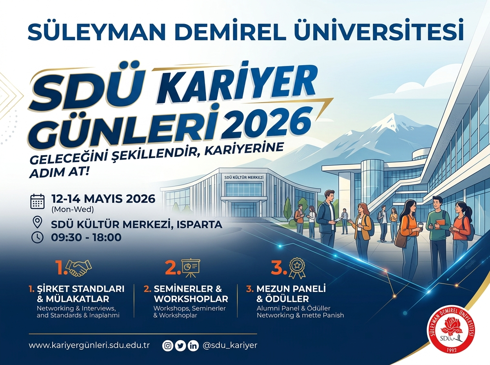

- Tarih
- Yer
- SDÜ Kültür Merkezi, Isparta
- Kategori
- Seminer
- Kontenjan
- 120
Süleyman Demirel Üniversitesi Kariyer Planlama ve Mezunlarla İletişim Uygulama ve Araştırma Merkezi tarafından organize edilen SDÜ Kariyer Günleri 2026 etkinliğinde, sektör temsilcileri ile buluşma, staj olanakları ve paneller gerçekleştirilecektir.